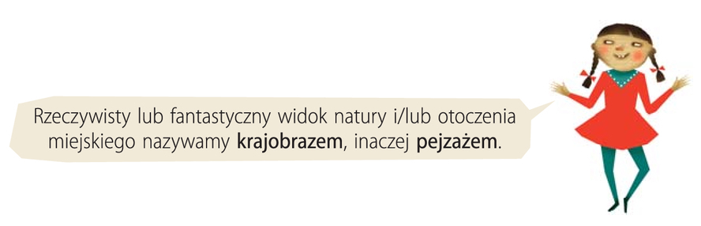

Rzeczywisty lub fantastyczny widok natury i/lub otoczenia miejskiego nazywamy krajobrazem, inaczej pejzażem.
Krajobraz (pejzaż) — это вид природы или местности, который мы видим перед собой.
np.
las, rzeka, pola, góry, niebo

John Constable
Park Wivenhoe w Essex, 1816


Dokładnie przyjrzyj się namalowanemu krajobrazowi.
Powiedz, co widzisz.
Możesz wykorzystać podane słownictwo.

шаблон
- Na obrazie widzę …
- Po lewej stronie …
- Po prawej stronie …
- W rzece …
- W oddali …
- Na niebie …
Przykładowa odpowiedź
Na obrazie widać scenerię pola, stawu i drzew. Po prawej stronie znajduje się mała łódź z panem i dzieckiem. Łowią ryby. Po lewej stronie obrazu widać pasące się krowy.
Przykładowa odpowiedź
Na obrazie widzę piękny krajobraz.
Po lewej stronie obrazu pasą się krowy.
Blisko rzeki stoi drewniany płot.
Woda w rzece lśni i spokojnie płynie.
Na rzece płyną łabędzie, a dalej ktoś płynie łodzią.
W oddali rosną wysokie drzewa.
Nad drzewami kłębią się duże chmury.
Cały krajobraz wygląda spokojnie i bardzo pięknie.
Podaj jak najwięcej określeń wskazanych elementów obrazu.
Wymień jak największą ilość określeń wyznaczonych elementów grafiki.
chmury
drzewa
woda
pola

Chmury – obłok, chmurzysko, chmurka, baranek
Trawa – murawa, pole,
Drzewa – knieja, las, lasek
Woda – jeziorko, tafla, glinianka, miejsce zgięcia, bagno, sadzawka, akwen, kardan, złącze, jeziorko, oczko wodne, ruchome połączenie, miejsce połączenia kości, zarośnięte jezioro, jezioro, mulisko, przegub, bajoro, zarośnięty staw, spoina.
Wyobraź sobie, że jesteś w parku Wivenhoe w Essex.
Opisz to miejsce i opowiedz o tym, co tam robisz.
Wykorzystaj wybrane słownictwo z ramki.


Widzę piękny staw. W oddali dostrzegam piękny lasek. Na środku parku można zauważyć piękny staw, którego tafla wody się mieni w przepiękny sposób. Woda pluszcze, uspokaja. Widok krajobrazu, jaki jest w Parku Vivenhoe jest wspomniały, barwny i niespotykany. W parku panuje również wiejski klimat, widać pasące się krowy.